, we can use:
, we can use:
In frequency modulation we modulate the frequency -- "modulation" here is just a latinate word for "change". Vibrato and glissando are frequency modulation. John Chowning tells me that he stumbled on FM when he sped up vibrato to the point that it was creating audible sidebands (perceived as a timbral change) rather than faster warbling (perceived as a frequency change). We can express this (the vibrato, not the neat story) as:

where the c subscript stands for "carrier" and f(t) means "some arbitrary function added to the carrier". Since cos takes an angle as its argument, f(t) "modulates" (that is, changes) the angle passed to the cosine. Hence the generic name "angle modulation". Phase and angle seem like synonyms, hence the name "phase modulation". Since we can always translate from instantaneous radial frequency

evaluated at a particular time to the corresponding frequency (differentiate and divide by 2 pi), this same fomula can viewed as "frequency modulation". Textbooks usually mutter "strictly speaking we can only take the cosine of an angle", and they put an explicit integral in when they mean frequency modulation:
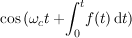
|
The terms "angle modulation", "phase modulation", and "frequency modulation" (not to mention "exponential modulation" and "angular modulation") are used almost interchangeably in the radio literature, but the textbooks on the subject normally distinguish between PM and FM as follows: if f(t) is directly proportional to the modulating signal then it's PM; if f(t) is directly proportional to the derivative of the modulating signal, then it's FM. Of course, you can't tell which is in use either from the waveform or the mathematical expression of the waveform -- you have to know what the modulating signal was. That is a roundabout way of saying that in computer music applications there is no essential difference between frequency and phase modulation. However, the fact that phase and frequency modulation are just two ways of interpreting the same thing should not mislead us into thinking "phase doesn't matter" -- the initial phases of the parts of the FM formula do make a difference, as we'll see below.
|
Just to beat this dead horse very thoroughly, here are two clm instruments, one performing textbook phase modulation, the other performing frequency modulation. I have tried to make the innards explicit at each step, and match the indices so that the instruments produce identical results given identical parameters. Also, to lay a different controversy to rest, it should be obvious from these two functions that there is no difference in run-time computational expense (or accuracy) between PM and FM. |
(define (pm beg end freq amp mc-ratio index)
(let ((carrier-phase 0.0)
(carrier-phase-incr (hz->radians freq))
(modulator-phase 0.0)
(modulator-phase-incr (hz->radians (* freq mc-ratio))))
(run
(lambda ()
(do ((i beg (1+ i)))
((= i end))
(let* ((modulation (* index (sin modulator-phase)))
(pm-val (* amp (sin (+ carrier-phase modulation)))))
; no integration in phase modulation
(set! carrier-phase (+ carrier-phase carrier-phase-incr))
(set! modulator-phase (+ modulator-phase modulator-phase-incr))
(outa i pm-val *output*)))))))
(define (fm beg end freq amp mc-ratio index)
(let ((carrier-phase 0.0)
(carrier-phase-incr (hz->radians freq))
(modulator-phase (* .5 pi))
(modulator-phase-incr (hz->radians (* freq mc-ratio)))
(fm-index (hz->radians (* freq mc-ratio index))))
; fix up fm index to take integration into account
(run
(lambda ()
(do ((i beg (1+ i)))
((= i end))
(let ((modulation (* fm-index (sin modulator-phase))))
(set! carrier-phase (+ carrier-phase modulation))
; here is the fm integration
(let ((fm-val (* amp (sin carrier-phase))))
(set! carrier-phase (+ carrier-phase carrier-phase-incr))
(set! modulator-phase (+ modulator-phase modulator-phase-incr))
(outb i fm-val *output*))))))))
(with-sound (:channels 2)
(pm 0 10000 1000 .25 0.5 4)
(fm 0 10000 1000 .25 0.5 4))
|
|
Given our formula for FM, let's assume, for starters, that f(t) is a sinusoid:
where the "m" stands for "modulator" and the "B" factor is usually called the modulation index. The corresponding CLM code is:
(oscil carrier (* B (oscil modulator)))
where oscil is (essentially):
(define* (oscil oscillator fm-input :optional (pm-input 0))
(let ((result (sin (+ oscillator-phase pm-input))))
(set! oscillator-phase (+ oscillator-phase (+ oscillator-phase-increment fm-input)))
result))
Since it is generally believed that the ear performs some sort of projection of the time domain waveform into the frequency domain (a Fourier Transform), and that timbre is at least partly a matter of the mix of frequencies present (the spectrum), our main interest in the FM formula is in the spectrum it produces. To determine that spectrum, we have to endure some tedious mathematics. By the trigonometric identity:
we can substitute for "a" and for "b" and get:
If we can get a Fourier transform of the two inner portions:
and
, we can use:

to get the final results. "A" here is
in the earlier formulas, and "B" is either
or
.
You can slog through the Fourier series expansion by hand, or look it up in Abramowitz and Stegun,
"Handbook of Mathematical Functions" (formulas 9.1.42 and 9.1.43), or take my word for it that:
Here the J's refer to the Bessel functions which we will return to later. First, let's finish this expansion -- we take these two sums and and plug them into our first expansion of the FM formula, and out pops:
or in a slightly more compact form:

Here we are using the fact that . We can change our point of view on the first part of the expansion given above, and ask for the amplitude of a given sideband before it is translated up to the carrier (by multiplication):
So we end up with a spectrum made up of a "carrier" at and symmetrically placed sidebands separated by . The amplitudes follow the Bessel functions. I put carrier in quotes because in computer music we listen to the result of the modulation (this was Chowning's idea -- see "The Synthesis of Complex Audio Spectra by Means of Frequency Modulation"). The Bessel functions are nearly 0 until the index (B) equals the order (n). Thereupon they have a bump and then tail off in a sort of damped sinusoidal way:
So as the index sweeps upward, energy is swept gradually outward into higher order side bands -- this is the originally exciting, now extremely annoying "FM sweep". It is worrisome that the simple case has so quickly become jejune. The only important thing to get from these functions is that the higher the index, the more dispersed the spectral energy -- normally a "brighter" sound.
| 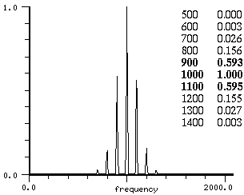 | 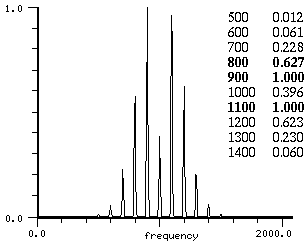 | 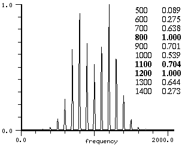 |
J0(1.0) = 0.765 -> 1.0 (*) J1(1.0) = 0.440 -> 0.575 J2(1.0) = 0.115 -> 0.150 J3(1.0) = 0.019 -> 0.025 J4(1.0) = 0.002 -> 0.003 (* Jn values normalized to match the fft peak values given above) |
J0(2.0) = 0.224 -> 0.388 (*) J1(2.0) = 0.577 -> 1.0 J2(2.0) = 0.353 -> 0.611 J3(2.0) = 0.129 -> 0.223 J4(2.0) = 0.034 -> 0.058 J5(2.0) = 0.007 -> 0.012 J6(2.0) = 0.001 -> 0.002 |
J0(3.0) = -0.260 -> -0.534 (*) J1(3.0) = 0.339 -> 0.697 J2(3.0) = 0.486 -> 1.0 J3(3.0) = 0.309 -> 0.635 J4(3.0) = 0.132 -> 0.271 J5(3.0) = 0.043 -> 0.088 J6(3.0) = 0.011 -> 0.023 |
There is a rule of thumb, Mr Carson's rule, about the overall bandwidth of the resultant spectrum (it follows from our description of the Bessel functions): Roughly speaking, there are fm-index+1 significant sidebands on each side of the carrier, so our total bandwidth is on the order of
2 * mc-ratio * carrier * (fm-index + 1)
This is a good approximation -- 99% of the signal power is within its limits.
|
Then there's the perennial question "why Bessel functions?". Consider our earlier expansion of cos(sin) in terms of sinusoids as a sort of Fourier transform of the simple FM equation. Looking at cos(sin) as the real part of e(jB sin wmt), our expansion is evaluating 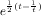which is one way of defining the Bessel functions (see also the earlier formulas for Jn(B)). If we view FM as one case of concatenated vectors (i.e. a whirling vector attached to another such vector), the ubiquity of Bessel functions in mathematical physics may seem less mysterious. (This was the context in which F W Bessel used these functions; they had been studied earlier by the Bernoullis and others, but Bessel, an astronomer, was interested in Kepler's equation and the three body problem. There are brief historical snippits at Encyclopedia Britannica and Bios. For the view from celestial mechanics today, see Vallado, "Fundamentals of Astrodynamics and Applications", page 80.) |
|
Here's a simple FM instrument:
(define* (fm beg dur freq amp mc-ratio index :optional (index-env '(0 1 100 1)))
(let* ((start (seconds->samples beg))
(end (+ start (seconds->samples dur)))
(cr (make-oscil freq))
(md (make-oscil (* freq mc-ratio)))
(fm-index (hz->radians (* index mc-ratio freq)))
(ampf (make-env index-env :scaler amp :duration dur))
(indf (make-env index-env :scaler fm-index :duration dur)))
(run
(lambda ()
(do ((i start (1+ i)))
((= i end))
(outa i (* (env ampf) ; amplitude env
(oscil cr (* (env indf) ; carrier + modulation env
(oscil md)))) ; modulation
*output*))))))
|
I put an envelope on the fm-index ("indf" above) so that we can try out the "dynamic spectra" ("dynamic" means "changing" here). For now, don't worry too much about the actual side band amplitudes -- these will not always match Chowning's description -- we'll get around to an explanation eventually.
(with-sound () (fm 0 1.0 100 .5 1.0 4.0))
is Chowning's first example. Sure enough, it's a complex spectrum (that is, it has lots of components -- try an index of 0 to hear a sine wave, if you're suspicious). Since our modulating frequency to carrier frequency ratio (mc-ratio above) is 1.0, we get sidebands at harmonics of the carrier. If we use an mc-ratio of .25 and a carrier of 400:
(with-sound () (fm 0 1.0 400 .5 0.25 4.0))
we end up with the same perceived pitch because the sidebands are still at multiples of 100 Hz.
(with-sound () (fm 0 1.0 400 .5 1.1414 4.0))
has inharmonic sidebands. Most real sounds seem to change over the course of a note, and it was at one time thought that most of this change was spectral. To get a changing spectrum, we need only put an envelope on the fm-index:
(with-sound () (fm 0 0.5 400 .5 1.0 5.0 '(0 0 20 1 40 .6 90 .5 100 0)))
making a "brass-like" sound. Similarly, Chowning suggests that
(with-sound () (fm 0 1.0 900 .5 1/3 2.0 '(0 0 6 .5 10 1 90 1 100 0)))
is a woodwind-like tone,
(with-sound () (fm 0 1.0 500 .5 .2 1.5 '(0 0 6 .5 10 1 90 1 100 0)))
is bassoon-like, and finally
(with-sound () (fm 0 1.0 900 .5 2/3 2 '(0 0 25 1 75 1 100 0)))
is clarinet-like. Now start at 2000 Hz, set the mc-ratio to .1, and sweep the FM index from 0 to 10, and the spectrogram looks like this:
|
Many simple extensions can be made to the fm instrument given above and something good can often be coaxed from it. But, to clear up one source of confusion -- if you looked at the spectrum of our first example, and compared it to the spectrum Chowning works out, you may wonder what's gone awry. We have to return to our initial set of formulas. If we consider that:

and using our previous formulas for the expansion of the cos(sin) and sin(sin) terms, with the identity:
we see that we still have a spectrum symmetric around the carrier, and the amplitude and frequencies are just as they were before, but the initial phases of the side bands have changed. Our result is now
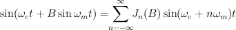This is Chowning's version of the expansion. Here we are also using 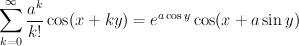. In general:
Our first reaction is, "so what if one's a sine and another's a cosine, or whatever -- they'll sound the same", but we are being hasty. What if (for example), the modulator has the same frequency as the carrier, and its index (B) is high enough that some significant energy appears at
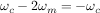Where does energy at a negative frequency go? We once again fall back on elementary trigonometry: 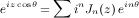, so the negative frequency component adds to the positive frequency component if it's a cosine, but subtracts if it's a sine. The upshot of all this is that the results will be different -- we get a different pattern of cancellations depending on the initial phases of the carrier and modulator. Take the CLM instrument:
(define (fm beg dur freq amp mc-ratio index carrier-phase mod-phase)
(let* ((start (seconds->samples beg))
(end (+ start (seconds->samples dur)))
(cr (make-oscil freq carrier-phase))
(md (make-oscil (* freq mc-ratio) mod-phase))
(fm-index (hz->radians (* index mc-ratio freq))))
(run
(lambda ()
(do ((i start (1+ i)))
((= i end))
(outa i (* amp (oscil cr (* fm-index (oscil md)))) *output*))))))
(with-sound () (fm 0 1.0 100 .25 1.0 4 0 (* .5 pi)))
(with-sound () (fm 0 1.0 100 .25 1.0 4.0 (* .5 pi) (* .5 pi)))
|
There is a difference! The first case is that given by Chowning in his fig 1.4a, the second is Bate's fig 3 ("The Effects of Modulator Phase on Timbres in FM Synthesis"). (At least I think it is -- Bate says he is changing the modulator's initial phase, but I can't reproduce his graph unless I change the carrier initial phase -- the important point is that these phases matter). Also, remember that we are thinking in terms of the pre-integration phase here (hence the (* .5 pi)):
| 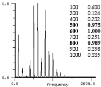 | and | 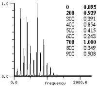 |
so by starting with a cosine in the modulator, after the integration in oscil (and ignoring the constant for the moment) we have
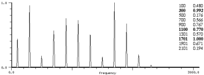By varying the relative phases (by very slowly changing the modulator frequency independently of the carrier), we get a changing spectrum because of these cancellations. Here is a CLM instrument that shows this effect:
(define (fm beg dur freq amp mc-ratio index car-phase mod-phase skew-func skew)
(let* ((start (seconds->samples beg))
(end (+ start (seconds->samples dur)))
(cr (make-oscil freq car-phase))
(md (make-oscil (* freq mc-ratio) mod-phase))
(skewf (make-env skew-func :scaler (hz->radians (* skew mc-ratio freq)) :duration dur))
(fm-index (hz->radians (* index mc-ratio freq))))
(run
(lambda ()
(do ((i start (1+ i)))
((= i end))
(outa i (* amp (oscil cr (* fm-index (oscil md (env skewf))))) *output*))))))
(with-sound () (fm 0 2.0 100 .25 1.0 4.0 0 0 '(0 0 50 1 100 0) .02))
|
One subtle pitfall here involves the constant offset caused by the integration. If we integrate f(x) we get some F(x) + F(a) where a is the starting point of the integration. In the case of sin(B*sin), a is 0, and F(x) is -cos(x), so the constant term is B (i.e. -B*(-cos(0))). That is, we get a phase offset in the outer sin calculation equal (in this case) to the modulation index! So the true carrier initial phase is a combination of the initial phase we specify and the modulation index times the initial value of the integrated wave.
|
The next question is "if we can get cancellations, can we twiddle the phases and get single sideband FM?". We could then get away from the symmetric spectra FM always tries to produce, and edge toward phase quadrature waveshaping. And as far as I can tell, the answer is, "yes, but..." We can get good results with low indices if we take advantage of the fact that:
If we have a spectrum B made up entirely of sines (or entirely cosines), we can then multiply it by sin A (or cos A) then add the two resulting spectra, and the (A + B) parts cancel. Here's an example:
(define (fm beg dur freq amp mc-ratio index cr0p cr1p md0p md1p)
(let* ((start (seconds->samples beg))
(end (+ start (seconds->samples dur)))
(cr0 (make-oscil 0 cr0p))
(cr1 (make-oscil 0 cr1p))
(md0 (make-oscil (* freq mc-ratio) md0p))
(md1 (make-oscil (* freq mc-ratio) md1p))
(am0 (make-oscil freq 0))
(am1 (make-oscil freq (* .5 pi)))
(fm-index (hz->radians (* index mc-ratio freq))))
(run
(lambda ()
(do ((i start (1+ i)))
((= i end))
(outa i (* amp (+ (* (oscil am0) (oscil cr0 (* fm-index (oscil md0))))
(* (oscil am1) (oscil cr1 (* fm-index (oscil md1))))))
*output*))))))
(with-sound () (fm 0 1.0 1000 .25 .1 1.0 0 (* .5 pi) (* .5 pi) 0))
|
Palamin et al in "A Method of Generating and Controlling Musical Asymmetrical Spectra" started at the same point (the expansion of simple FM), added a factor r^n to each sideband, and then worked backwards to get the exponential modulation that would produce that spectrum:
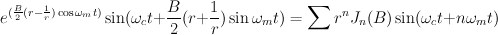
|
So far we have been using just a sinusoid for the modulator -- what if we make it a more complicated signal? Here again elementary trigonometry can be used to expand
The modulating signal is now made up of two sinusoids (don't despair; this is a terminating sequence). Since sine is not linear, this is not the same thing as
In the second case we just get the superposition of the two simple FM spectra, but in the first case we get a more complex mixture involving all the sums and differences of the modulating frequencies. If the indices are small (the B's are much less than 1), then there isn't much difference between the two versions. Once again, the expansion is tedious, but it really involves nothing more than putting the sum of the sines in place of the single sine in the previous case, then turning the algebraic crank. See Le Brun "A Derivation of the Spectrum of FM with a Complex Modulating Wave". The result can be expressed:
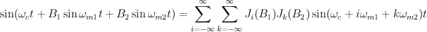You can chew up any amount of free time calculating the resulting side band amplitudes -- see Schottstaedt "The Simulation of Natural Instrument Tones Using Frequency Modulation with a Complex Modulating Wave". These extra modulating components flatten and spread out the spectrum somewhat. In general:
A CLM instrument to produce something like this might be:
(define (fm beg dur freq amp mc-ratios indexes carrier-phase mod-phases)
(let* ((start (seconds->samples beg))
(end (+ start (seconds->samples dur)))
(cr (make-oscil freq carrier-phase))
(n (length mc-ratios))
(modulators (make-vector n))
(fm-indices (make-vct n)))
(do ((i 0 (1+ i)))
((= i n))
(vector-set! modulators i (make-oscil (* freq (list-ref mc-ratios i)) (list-ref mod-phases i)))
(vct-set! fm-indices i (hz->radians (* freq (list-ref indexes i) (list-ref mc-ratios i)))))
(run
(lambda ()
(do ((i start (1+ i)))
((= i end))
(let ((sum 0.0))
(do ((k 0 (1+ k)))
((= k n))
(set! sum (+ sum (* (vct-ref fm-indices k) (oscil (vector-ref modulators k))))))
(outa i (* amp (oscil cr sum)) *output*)))))))
(with-sound () (fm 0 2.0 440 .3 '(1 3 4) '(1.0 0.5 0.1) 0.0 '(0.0 0.0 0.0)))
|
But this is silly -- I don't think all these modulators are buying us anything. I say three is enough. My favorite computer instrument, the FM violin, uses three sinusoidal components in the modulating wave; for more complex spectra these violins are then ganged together (see fmviolin.clm for many examples). By using a few sines in the modulator, you get away from the "simple FM sweep" that has become tiresome, and the broader, flatter spectrum is somewhat closer to that of a real violin.
|
The lumpy nature of the simple FM spectrum can be seen in figures given earlier. The main lump is near n=B, a most unfortunate fact if we are trying to mimic the spectra of normal musical instruments. Long time FM'ers have tied themselves in elaborate knots trying to palliate this sore thumb of a bump; parallel modulators are merely a simple and obvious bandage. |
A pared down version of the fm-violin is:
(define (violin beg dur frequency amplitude fm-index)
(let* ((start (seconds->samples beg))
(end (+ start (seconds->samples dur)))
(frq-scl (hz->radians frequency))
(maxdev (* frq-scl fm-index))
(index1 (* maxdev (/ 5.0 (log frequency))))
(index2 (* maxdev 3.0 (/ (- 8.5 (log frequency)) (+ 3.0 (/ frequency 1000)))))
(index3 (* maxdev (/ 4.0 (sqrt frequency))))
(carrier (make-oscil frequency))
(fmosc1 (make-oscil frequency))
(fmosc2 (make-oscil (* 3 frequency)))
(fmosc3 (make-oscil (* 4 frequency)))
(ampf (make-env '(0 0 25 1 75 1 100 0) :scaler amplitude :duration dur))
(indf1 (make-env '(0 1 25 .4 75 .6 100 0) :scaler index1 :duration dur))
(indf2 (make-env '(0 1 25 .4 75 .6 100 0) :scaler index2 :duration dur))
(indf3 (make-env '(0 1 25 .4 75 .6 100 0) :scaler index3 :duration dur))
(pervib (make-triangle-wave 5 :amplitude (* .0025 frq-scl)))
(ranvib (make-rand-interp 16 :amplitude (* .005 frq-scl))))
(run
(lambda ()
(do ((i start (1+ i)))
((= i end))
(let ((vib (+ (triangle-wave pervib) (rand-interp ranvib))))
(outa i (* (env ampf)
(oscil carrier
(+ vib
(* (env indf1) (oscil fmosc1 vib))
(* (env indf2) (oscil fmosc2 (* 3.0 vib)))
(* (env indf3) (oscil fmosc3 (* 4.0 vib))))))
*output*)))))))
(with-sound () (violin 0 1.0 440 .1 2.5))
|
|
We can, of course, use FM (or anything) to produce the modulating signal. When FM is used, it is sometimes called "cascade FM":
In CLM:
(* A (oscil carrier (* B (oscil modulator (* C (oscil cascade))))))
and we can get an extremely complex spectrum in no time. Unfortunately, FM can produce energy at 0Hz (when, for example, the carrier frequency equals the modulating frequency), and that 0Hz ("DC") component becomes a constant offset in the lower of the two FM pairs. So your carrier no longer has any obvious relation to ! That is, we can expand our cascade formula into:
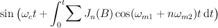but now wherever . This could be a disaster, because in most cases where we care about the perceived fundamental, we are trying to create harmonic spectra, and that is pretty hard if we can't predict what our modulator-carrier ratios will be. Jan Mattox's fm-drum can ignore such niceties. If you are using low indices and the top pair's mc-ratios are below 1.0 (in vibrato, for example), you have a good chance of getting usable results. If you want cascade FM to work in other situations, make sure the top oscil has an initial phase of pi/2 -- the middle FM spectrum will then have only sines (not cosines), so the DC amplitude will (sometimes) be 0 Even the tiniest error in the top oscil's phase becomes a beat, inharmonicity, or a timbral change in the output, so cascade FM is almost impossible to keep under control.
|
The irascible reader may be grumbling about angels and pins, so here's an example of cascade FM to show how strong this effect is: |
(define (cascade beg dur freq amp modrat modind casrat casind caspha)
(let* ((start (seconds->samples beg))
(end (+ start (seconds->samples dur)))
(cr (make-oscil freq))
(md (make-oscil (* freq modrat)))
(ca (make-oscil (* freq casrat) caspha))
(fm-ind0 (hz->radians (* modind modrat freq)))
(fm-ind1 (hz->radians (* casind (/ casrat modrat) freq))))
(run
(lambda ()
(do ((i start (1+ i)))
((= i end))
(outa i (* amp (oscil cr (* fm-ind0 (oscil md (* fm-ind1 (oscil ca)))))) *output*))))))
(with-sound ()
(cascade 0 1.0 400 .25 1.0 1.0 1.0 1.0 0)
(cascade 1.5 1.0 400 .25 1.0 1.0 1.0 1.0 (* .5 pi)))
|
|
A similar trick comes up in "feedback FM" used in some synthesizers. Here the output of the carrier is low-pass filtered, then fed back into its fm-input location. Cellon, written by Stanislaw Krupowicz, is an example; the feedback FM occurs in the lines (edited here for clarity):
(set! fm (one-zero low (* B (oscil fmosc fm))))
(outa i (* amp (oscil carrier fm)) *output*)
or
sin(y <= w + B sin y)
(ignoring the low pass filter for the moment). This is expanded by Tomisawa as:
As Tomisawa points out this is very close to the formulas we have been looking at already, except that the argument to the Bessel function depends on the order, we have only multiples of the carrier frequency in the expansion, and the elements of the sequence are multiplied by 2/nB. The result is a much broader, flatter spectrum than one normally gets from FM. If you just push the index up in normal FM, the energy is pushed outward in a lumpy sort of fashion, not evenly spread across the spectrum. In effect we've turned the axis of the Bessel functions so that the higher order functions start at nearly the same time as the lower order functions. The new function Jn(nB) decreases (very!) gradually. For example if the index (B) is 1:
and so on. Since the other part of the equation goes down as 1/n, we get essentially a sawtooth wave out of this equation (its harmonics go down as 1/n). Tomisawa suggests that B should be between 0 and 1.5. Since we are dividing by B in the equation, we might worry that as B heads toward 0, all hell breaks loose, but luckily:
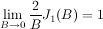and for all the other components
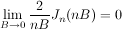so, just as in normal FM, if the index is 0, we get a pure sine wave. This also seems natural from sin(y <= w + B sin y)
with B=0 (but computer arithmetic doesn't care what "seems natural"). Here's a simple example:
(define (feedbk beg dur freq amp index)
(let* ((start (seconds->samples beg))
(end (+ start (seconds->samples dur)))
(y 0.0)
(x-incr (hz->radians freq)))
(run
(lambda ()
(do ((i start (1+ i))
(x 0.0 (+ x x-incr)))
((= i end))
(set! y (+ x (* index (sin y))))
(outa i (* amp (sin y)) *output*))))))
(with-sound () (feedbk 0 1 100.0 1.0 1.0))
|
|
Apparently, if B>1.0, this formula becomes
numerically unstable; the result is a burst of noise.
Tomisawa says the problem "is considered to be caused by an error in the digital computation".
Perhaps we have wandered into the realm of chaos:
(set! x (* 4 (sin (* pi x))))
can behave chaotically.
|
One of the standard ways to make noise (deliberately) with FM is to increase the index until massive aliasing is taking place. In another, more controllable, method, we inject noise into our FM equations and see if anything useful pops out. The fm-noise instrument performs one form of modulation with noise. The actual modulation portion is:
(oscil carrier (* fm-index (rand modulator)))
where rand is producing white noise. You can produce a sequence of different noises, moving toward gaussian noise, simply by adding rand's together (this is known as the "central-limit theorem"). The probability density of a sum of n independent random variables (rand's in clm) tends to approach a gaussian density as n increases. We start with "white" noise which has an equal probability of any value. Add another rand, thereby convolving the two flat "white" densities, and you get a /\ shape. The more you add the closer you get to the bell shaped curve of gaussian noise. When frequency modulation gets noise, the power spectral density of the output has the same form as the density function of the modulating wave, but now centered around the carrier. For either kind of noise (white or gaussian), the bandwidth of the result is about 4 times the peak deviation (the random number frequency times its amplitude). The real value of noise, however, is not in making hiss. One of the great improvements to the world of computer music came about when Heinrich Taube fed noise (as a sort of cascade FM) into the parallel modulators of an fm-flute, but not into the carrier. The modulating signal becomes a sum of two or three narrow band noises (narrow because normally the amplitude of the noise is low), and these modulate the carrier. It is my belief that you get the normal spectrum with each component smeared out by a copy of the noise band:
In CLM, the basic idea is:
(oscil carrier (* fm-index (oscil fm (* noise-index (rand noise)))))
In the realm of "anything" as the modulating signal, consider
(sin (+ sound-file (* index (sin (* 2 pi sound-file)))))
where "sound file" is any recorded sound. I call this "contrast-enhancement" in the CLM package. It makes a sound "crisper"; "Wait for Me!" uses it whenever a sound needs to cut through a huge mix of sounds.
|
We can use more than one sinusoidal component in our carrier, or multiple banks of carriers and modulators, and depend upon vibrato and "spectral fusion" to make the result sound like one voice. In this cross between additive synthesis (the multiple carriers) and FM (the "formant" centered on each carrier), we get around many of the limitations of the Bessel functions. There are numerous examples in fmviolin.clm. One of the raspier versions of the fm-violin used a sawtooth wave as the carrier. One of the more elaborate multi-carrier FM instruments is the voice instrument written by Marc Le Brun, and used in "Colony" and other pieces. In a simplified form it is:
(define* (vox beg dur freq1 amp :optional (indexes '(.005 .01 .02)) (formant-amps '(.86 .13 .01)))
(let* ((start (seconds->samples beg))
(end (+ start (seconds->samples dur)))
(freq freq1)
(car-os (make-oscil 0))
(evens (make-vector 3))
(odds (make-vector 3))
(amps (apply vct formant-amps))
(ampf (make-env '(0 0 25 1 75 1 100 0) :scaler amp :duration dur))
(frmfs (make-vector 3))
(indices (apply vct indexes))
(per-vib (make-triangle-wave 6 :amplitude (* freq .03)))
(ran-vib (make-rand-interp 20 :amplitude (* freq .5 .02))))
(do ((i 0 (1+ i)))
((= i 3))
(vector-set! evens i (make-oscil 0))
(vector-set! odds i (make-oscil 0)))
(vector-set! frmfs 0 (make-env '(0 520 100 490) :duration dur))
(vector-set! frmfs 1 (make-env '(0 1190 100 1350) :duration dur))
(vector-set! frmfs 2 (make-env '(0 2390 100 1690) :duration dur))
(run
(lambda ()
(do ((i start (1+ i)))
((= i end))
(let* ((frq (+ freq (triangle-wave per-vib) (rand-interp ran-vib)))
(car (oscil car-os (hz->radians frq)))
(sum 0.0))
(do ((k 0 (1+ k)))
((= k 3))
(let* ((frm (env (vector-ref frmfs k)))
(frm0 (/ frm frq))
(frm-int (inexact->exact (floor frm0)))
(even-amp 0.0) (odd-amp 0.0)
(even-freq 0.0) (odd-freq 0.0))
(if (even? frm-int)
(begin
(set! even-freq (hz->radians (* frm-int frq)))
(set! odd-freq (hz->radians (* (+ frm-int 1) frq)))
(set! odd-amp (- frm0 frm-int))
(set! even-amp (- 1.0 odd-amp)))
(begin
(set! odd-freq (hz->radians (* frm-int frq)))
(set! even-freq (hz->radians (* (+ frm-int 1) frq)))
(set! even-amp (- frm0 frm-int))
(set! odd-amp (- 1.0 even-amp))))
(set! sum (+ sum (+ (* (vct-ref amps k)
(+ (* even-amp
(oscil (vector-ref evens k)
(+ even-freq (* (vct-ref indices k) car))))
(* odd-amp
(oscil (vector-ref odds k)
(+ odd-freq (* (vct-ref indices k) car)))))))))))
(outa i (* (env ampf) sum) *output*)))))))
(with-sound ()
(vox 0 1.0 220.0 0.5)
(vox 1.5 1.0 110 .5 '(0.02 0.01 0.02) '(.9 .09 .01)))
|
which produces this spectrogram:
Abramowitz and Stegun, "Handbook of Mathematical Functions", Dover 1965.
Bate, "The Effect of Modulator Phase on Timbres in FM Synthesis", CMJ vol 14, no3 1990, p38-45.
Chowning, "The Synthesis of Complex Audio Spectra by Means of Frequency Modulation", JAES 21:526-534, 1973
De Poli, "A Tutorial on Digital Sound Synthesis Techniques", CMJ vol7 no 4, 1983.
Gagliardi, "Introduction to Communications Engineering", Wiley Interscience, 1978.
Klapper, "Selected Papers on Frequency Modulation", Dover 1970. (Out of print, but available
via used book markets such as abebooks or amazon -- usually about $25).
The Bessel function graph is from Corrington, "Variation of Bandwidth with Modulation Index in FM",
The picture below of an early radio is from Armstrong, "A Method of Reducing Disturbances in Radio
Signaling by a System of FM".
Le Brun, "A Derivation of the Spectrum of FM with a Complex Modulating Wave", CMJ vol1, no 4 1977 p51-52
Moorer, "Signal Processing Aspects of Computer Music: A Survey" Proc IEEE vol 65 1977.
Palamin, Palamin, Ronveaux "A Method of Generating and Controlling Asymmetrical Spectra", JAES vol 36,
no 9, Sept 88, p671-685.
Schottstaedt, "The Simulation of Natural Instrument Tones Using Frequency Modulation with a Complex Modulating Wave",
CMJ vol 1 no 4 1977 p46-50
Taub and Schilling, "Principles of Communications Systems", McGraw-Hill, 1986.
Tomisawa, "Tone Production Method for an Electronic Musical Instrument" US Patent 4,249,447, 1981.
Watson, "A Treatise on the Theory of Bessel Functions", Cambridge, 1922.
|
|